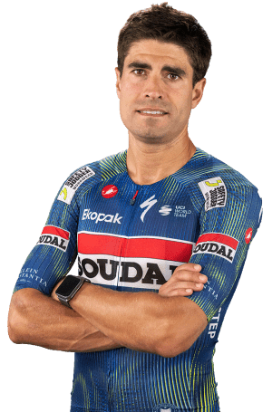

Mikel Landa
Datos personales
- Mikel Alfredo Landa Meana
- 13 de diciembre de 1989
- España
- SOUDAL QUICK-STEP
- Dorsal: 121

Datos equipos
- Soudal Quick-Step (2024-2026)
- Bahrain Victorious (2020-2023)
- Movistar Team (2018-2019)
- Team Sky (2016-2017)
- Astana (2014-2015)
- Euskaltel-Euskadi (2011-2013)
Temporada 2025
| Datos | Resultados |
|---|---|
| Días de competición | 45 |
| Victorias | 0 |
| Equipos | 1 |
| Puesto en la Vuelta a Burgos | 18 |
| Participaciones en La Vuelta | 9 |
| Mejor puesto en etapa de La Vuelta | 2 |
Multimedia
Equipo SOUDAL QUICK-STEP en la Vuelta Ciclista a España 2026.